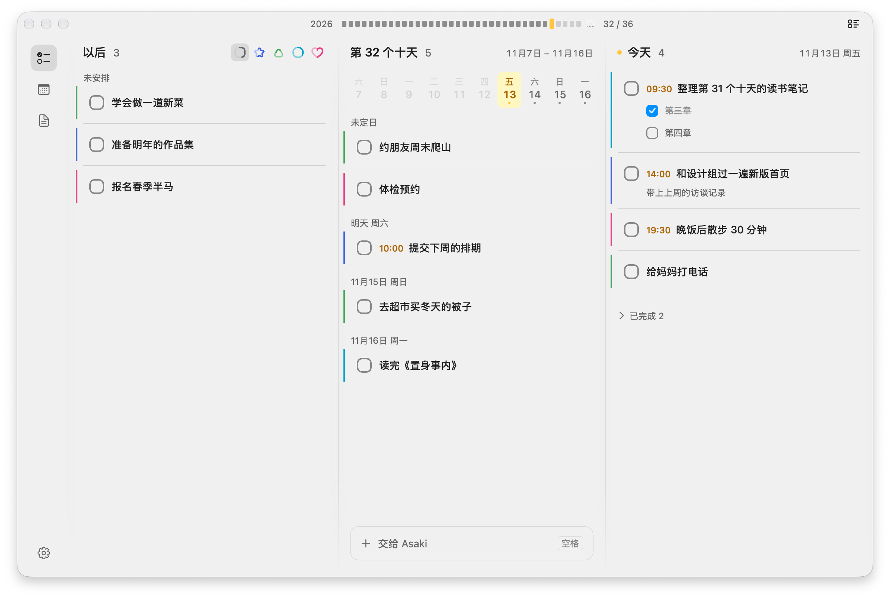
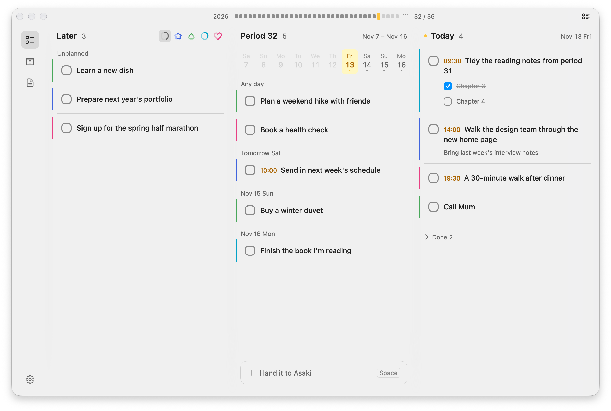
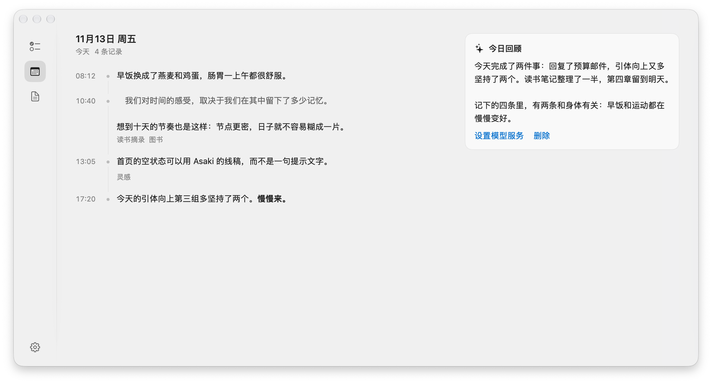
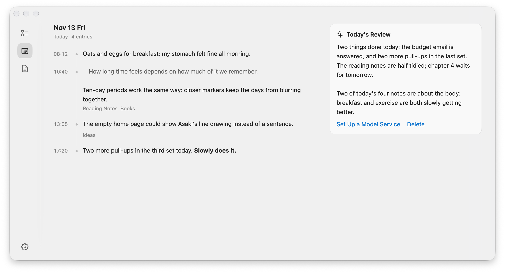
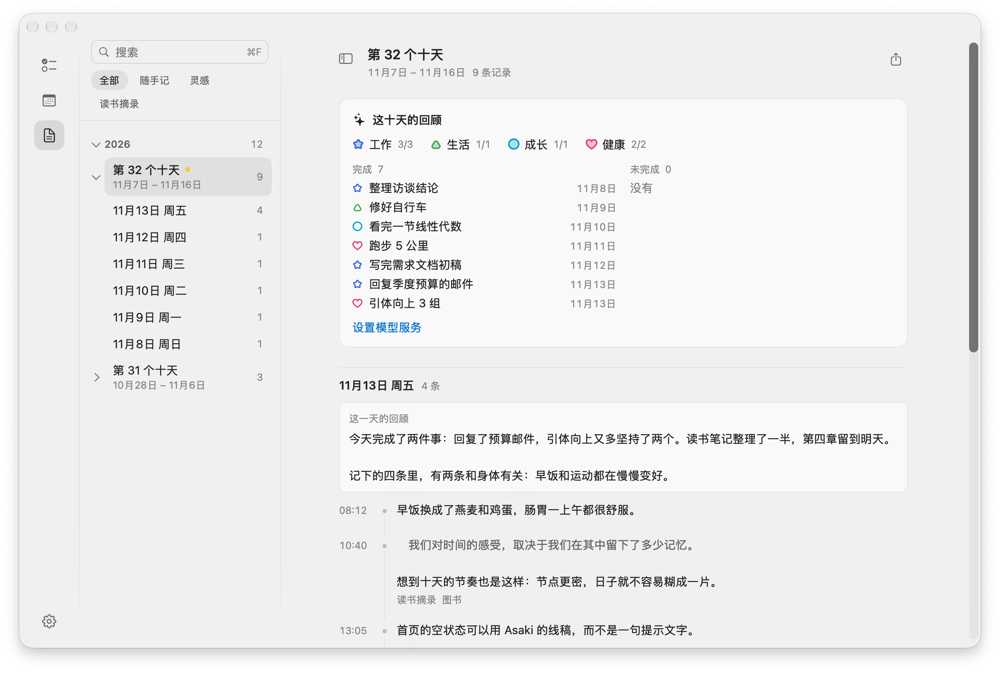
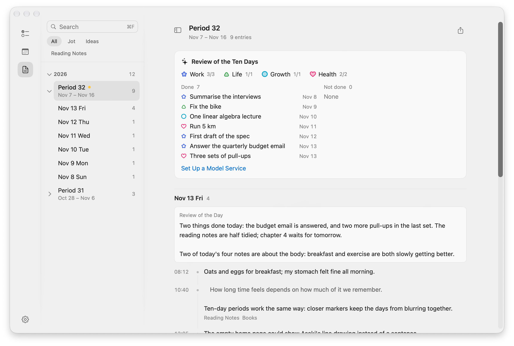

以十天为节奏，
专注今天。Plan in ten days.
Focus on today.
Asaki 是一款 Mac 应用。它把一年分成 36 个十天：安排要做的事，随手收下想到的、看到的，再按十天回头看。 Asaki is a Mac app that divides the year into 36 periods of ten days. Plan what to do, capture what you think and read, and look back at the end of every period.
下载 Mac 版Download for macOS版本 0.1.11，需要 macOS 26Version 0.1.11. Requires macOS 26.


安排Plan
十天，一个看得到头的期限Ten days: a horizon you can see
一周太短，一个月又太长。十天够做完一件事，也短到可以如实安排。一年从 1 月 1 日起分成 36 个十天，最后五六天留作整理日，用来回顾和收尾。 A week is too short and a month too long. Ten days is enough to finish something and short enough to plan honestly. The year runs in 36 periods from January 1, and its last five or six days are kept for tidying up.
三列，一个方向Three columns, one direction
左边是以后，放还没安排的事；中间是这十天；右边是今天。日期一到，任务自己往右走。没做完的会留在今天，不会悄悄消失。 Later is on the left, for what has no date yet. This period is in the middle and today on the right. Tasks move rightwards by themselves as their day comes, and what is not done stays in today instead of quietly going away.
生活的四个部分Four parts of a life
工作、生活、成长、健康各有一个图形。这十天里做完得越多，图形闭合得越多，全部完成时它会被填满。一眼就能看出哪一部分被冷落了。 Work, life, growth and health each have a shape. The more of a period's tasks you finish, the further the shape closes, and it fills in when all are done. One look shows which part has been neglected.
收录Capture
在任何 App 里，一个快捷键One shortcut, from any app
收录面板浮在当前 App 之上，记下一件待办、一个念头或一段读到的文字，不必离开手上的事。灵感、读书摘录这样的场景可以改名，也可以自己添加。选中的文字、图片和文件，或者刚复制的内容，也能直接收进今天。 The capture panel floats over the app you are in. Write down a task, a thought or a passage you have read without leaving what you are doing. Scenes such as Ideas and Reading Notes can be renamed, and you can add your own. Selected text, images and files, or whatever you have just copied, go straight into today.
- ⌥Space
- 待办To-do
- ⇧⌘J
- 随手记Jot
- ⌃⌥1
- 灵感Ideas
- ⌃⌥2
- 读书摘录Reading Notes
- ⇧⌘K
- 收录选中内容Save Selection
今天，排成一条线Today, in one line
今天收下的内容按时间排列，旁边是今日回顾。记录点进去就能改，支持 Markdown，边写边显示效果；图片和文件跟在记录下方。 What you captured today is laid out by time, with today's review beside it. Click an entry to change it. Markdown is shown as you type, and images and files sit under their entry.


回顾Review
每个十天，回头看一次Look back every ten days
过去的日子按年、十天、天整理在记录里。选中一个十天，能看到各部分的完成情况、做完和没做完的待办，以及每一天的回顾与记录。一个十天结束还没回顾时，记录的图标上会出现一个蓝点。 Past days are kept in Records by year, period and day. Choose a period to see how each part of life went, the tasks done and not done, and every day's review and entries. When a period has ended without a review, a blue dot appears on the Records icon.


请模型写一段回顾Have a model write the review
回顾里的统计和列表都直接来自你的记录，不需要 AI。想要一段文字时，可以选一个模型服务来写，用你自己的密钥。只有点“生成回顾”时才会发送，发送前可以查看全文，结果确认后才保存。 The figures and lists in a review come straight from your records, with no AI involved. When you want it written up, choose a model service and use your own key. Nothing is sent until you click Generate, you can read everything before it goes, and the result is saved only when you accept it.
- DeepSeek
- Kimi
- 通义千问Qwen
- 智谱 GLMZhipu GLM
- 豆包Doubao
- MiniMax
- 硅基流动SiliconFlow
- 到时提醒Reminders
- 在一圈 24 小时的表盘上定时间。时间一到，屏幕右上角滑入一张卡片，可以直接完成，或者十分钟后再提醒。Set a time on a 24-hour dial. When it comes, a card slides in at the top right of the screen. Complete the task there, or have it come back in ten minutes.
- 按空格新建Space to add
- 按一下空格，写下接下来要做的事。备注、子任务、日期和时间都在同一个面板里。菜单栏图标旁显示今天还剩几件。Press Space and write what comes next. Notes, subtasks, a date and a time are all in the same panel. The menu bar shows how many are left today.
- 搜索Search
- 在任何视图按 ⌘F。日记、回顾和待办里的文字都能搜到，结果按十天分组，搜到的字会标出来。Press ⌘F anywhere. Journal entries, reviews and tasks are all searched, with results grouped by period and every match highlighted.
- 附件Attachments
- 图片和文件可以粘贴、拖入或收录，和记录放在一起。Paste, drop or capture images and files, and they are kept with their entry.
- 导出与导入Export and import
- 导出一个十天或全部记录，每天一个 Markdown 文件，附件放在旁边，任何编辑器都能打开。Markdown 文件也能导入成日记。Export a period or everything as one Markdown file a day, attachments alongside, readable in any editor. Markdown files can be imported into the journal too.
- iCloud 同步iCloud sync
- 任务、日记和附件通过你自己的 iCloud 在设备之间同步，开发者看不到。默认关闭。Tasks, journal and attachments sync through your own iCloud, where the developer cannot see them. Off until you turn it on.
- 数据在你的 Mac 上Your data, on your Mac
- 没有账户和服务器，不收集使用数据。模型服务的密钥只存在这台 Mac 的钥匙串里。No account, no server, no usage data. Keys for model services stay in this Mac's keychain.
- 中文与 EnglishChinese and English
- 界面可以在中文和英文之间切换，浅色、深色主题跟随系统或自选。Switch the app between Chinese and English, and follow the system's light or dark appearance or pick one.
从这个十天开始Start with this period
下载 Mac 版Download for macOS版本 0.1.11，需要 macOS 26Version 0.1.11. Requires macOS 26.